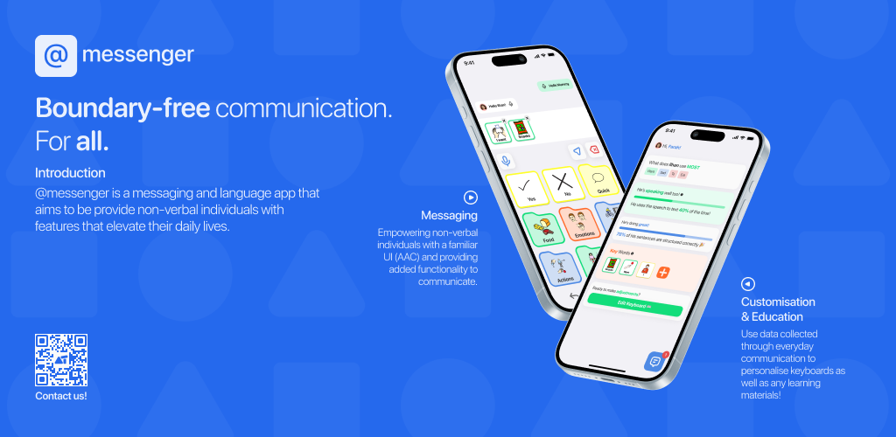
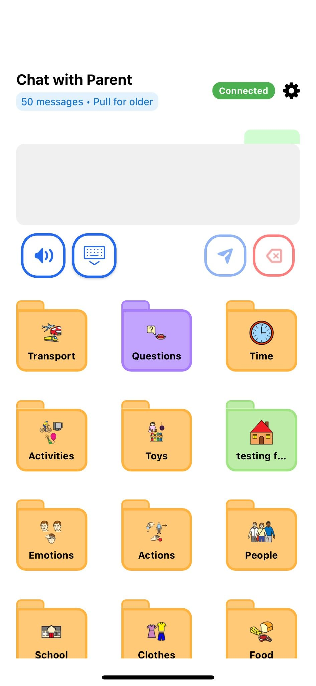
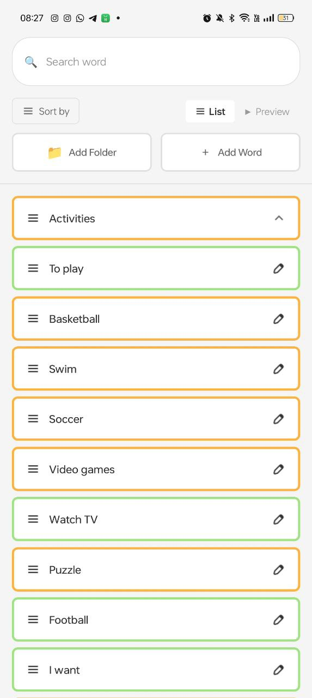
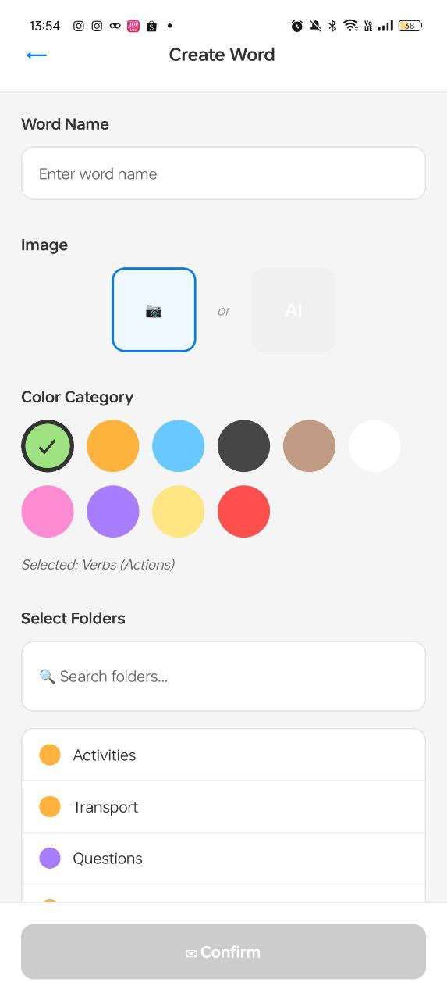

AAC Messenger
A cross-platform AAC communication app designed to make everyday communication more accessible for non-speaking children and the people who support them.
- Role
- Co-Founder & Software Engineer
- Platform
- iOS & Android
- Stack
- React Native, Expo, AWS

Overview
Building technology around how people actually communicate.
AAC Messenger is a mobile application designed to enhance communication and accessibility for non-speaking special needs individuals. By bringing assistive communication tools and two-way communication into one platform, the app is designed to make everyday interactions simpler for users and their caregivers.
Developed alongside my brother as part of our startup journey, the product has been shaped through user feedback, iterative design and ongoing conversations with parents and educators.
The problem
Accessibility tools should remove friction, not add it.
Many existing accessibility apps can be difficult to learn, limited in customization, or expensive for families. Users often face:
- Steep learning curves that create barriers instead of removing them.
- Limited customization that does not adapt to individual communication needs.
- High costs that can make assistive technology inaccessible to families.
The solution
A simple communication layer built around flexibility.
We designed an assistive communication experience that lets users quickly express themselves while giving caregivers and support networks a way to stay connected.
“Our goal was simple: make every interaction feel natural and effortless, removing barriers instead of adding complexity.”
Key features
Designed for everyday communication.
Grid-based communication
A clean, customizable grid of cards that users can tap to speak words or phrases aloud.
Folder navigation
Cards can function as folders for categories such as Food, Emotions and Actions.
Text-to-speech
Cards can instantly speak their content, enabling quick and natural communication.
Personalized vocabulary
Users can use admin-created cards or tailor vocabulary around their own needs.
Real-time messaging
Built-in chat lets users and caregivers communicate seamlessly within the app.
Accessible interaction
Large touch targets, clear visual hierarchy and a minimal interface support accessibility-focused use.
Technical implementation
From mobile UI to cloud infrastructure.
Built with React Native and Expo for cross-platform delivery, AAC Messenger uses a lightweight AWS-backed architecture to support authentication, APIs and real-time communication.
Frontend
- React Native
- Expo
- JavaScript
- React Navigation
Backend
- Firebase Authentication
- AWS API Gateway
- AWS Lambda
- AWS DynamoDB
Device & APIs
- WebSockets
- Expo Speech
- AsyncStorage
- iOS & Android
Impact
More than a technical project.
Challenges & learnings
Accessibility changed how I think about UI.
Challenge: The interface needed to be simple enough for non-speaking users while remaining flexible enough to support folders, categories and real-time communication. Traditional mobile UI patterns did not always work well for users with autism or limited motor control.
Solution: I redesigned the grid multiple times, adjusting card sizes, spacing, colors and navigation flow based on how my younger brother interacted with it. I simplified touch interactions, strengthened visual hierarchy and refined the folder system to reduce cognitive load.
Learning: Accessibility is not about adding features. It is about removing friction. Every iteration reinforced how much thoughtful UI decisions can affect someone who relies on the product every day.
Screenshots
The product in use.



Next steps
Still evolving with the people who use it.